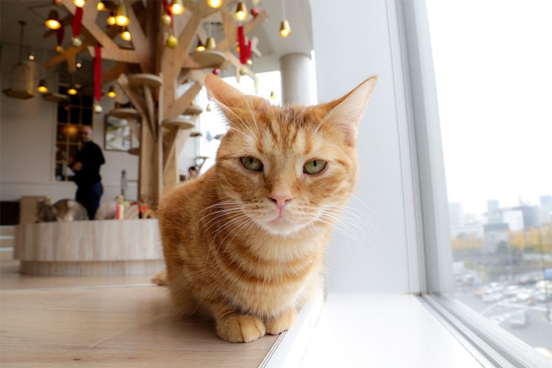
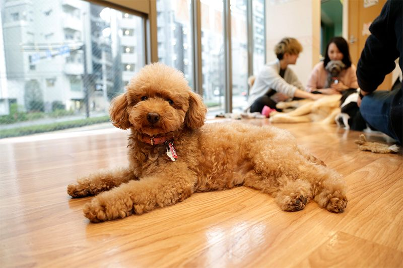
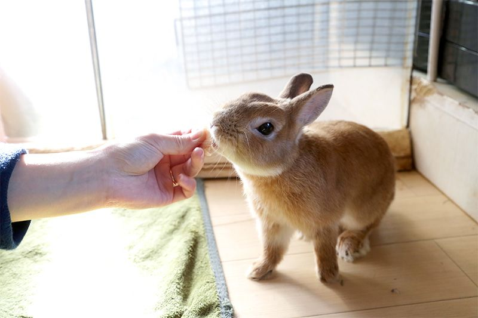
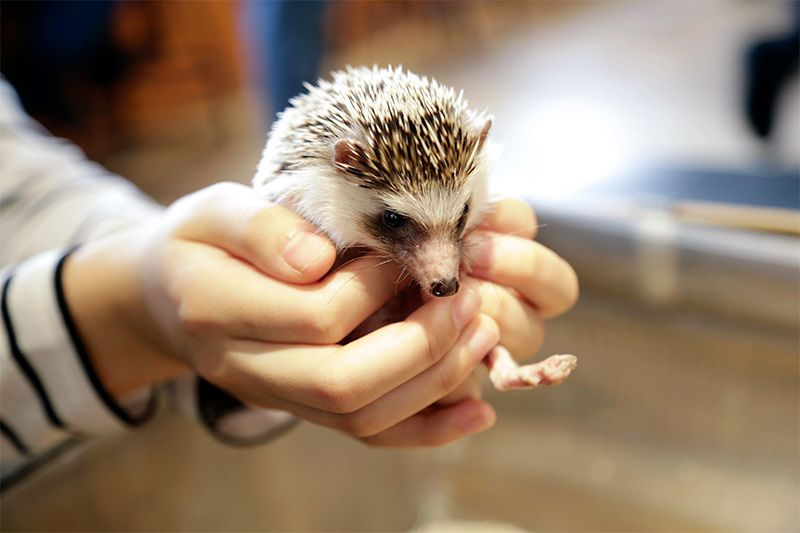
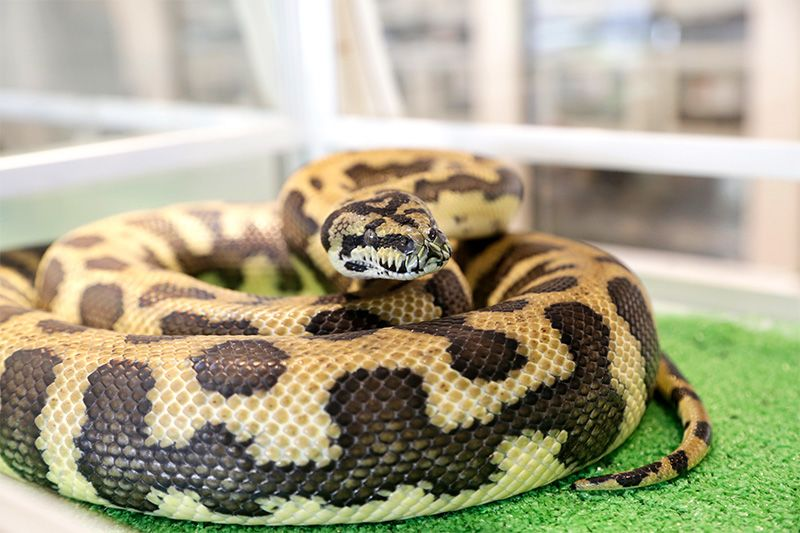

Les Cafés à Animaux
Connaissez vous l'existence de ces cafés insolites ?
Très populaire en Asie de l'Est ces cafés ont la particularité de vous permettre de passer un moment agréable à déguster et boire une boisson entouré de vos animaux préférés ! Le café à chat ou "Neko bar" (terme provenant du Japon) étant devenu presque classique nous allons voir ensemble quelle variété d'animaux nous pouvons maintenant retrouver dans ces cafés. Attention certains sont très originaux !
Le chat :
Saviez vous que les chats ont des vertus thérapeutiques ? Ils sont en effet capable de nous destrésser et nous apaiser par leur simple présence ! C'est peut-être pour cela que nous sommes si fous d'eux (Ça et leur tête). Avec ces raisons il n'est pas étonant que le chat soit aussi populaire dans les cafés !
Le chien :
Le 2ème animal après le chat c'est bien sûr le chien ! Il n'est pas le meilleur ami de l'homme pour rien, type de café très populaire il n'est pas rare d'en voir qui sont consacrés à une seule race comme le shiba inu.
Le lapin :
Encore un animal qu'on a l'habitude de cotoyer, le lapin. Très affectueux surtout quand on les nourrit il peut être très agréable de boire son thé en Compagnie de lapin et peut être se retrouver au Pays des Merveilles ?
La chouette :
Premier animal véritablement original dans notre présentation : la chouette. Toutes sont habituées au contact humain depuis leur naissance vous pouvez donc vous en approcher sans crainte. Attention néanmoins aux petits coups de becs lorsqu'on les caresses.

L'hérisson :
Un autre animal avec qui on ne s'attendrait pas à prendre un thé l'hérisson! On comprend tout de suite pourquoi il est dans cette liste quand on voit son apparence, mais attention bien qu'il soit très gentil il n'est pas facile à caresser!
Le serpent :
Avis aux plus chevronnés d'entre vous ! Certainement l'expérience la plus originale de cette présentation, vous pouvez tester l'expérience de manipuler un serpent si le coeur vous en dit.
